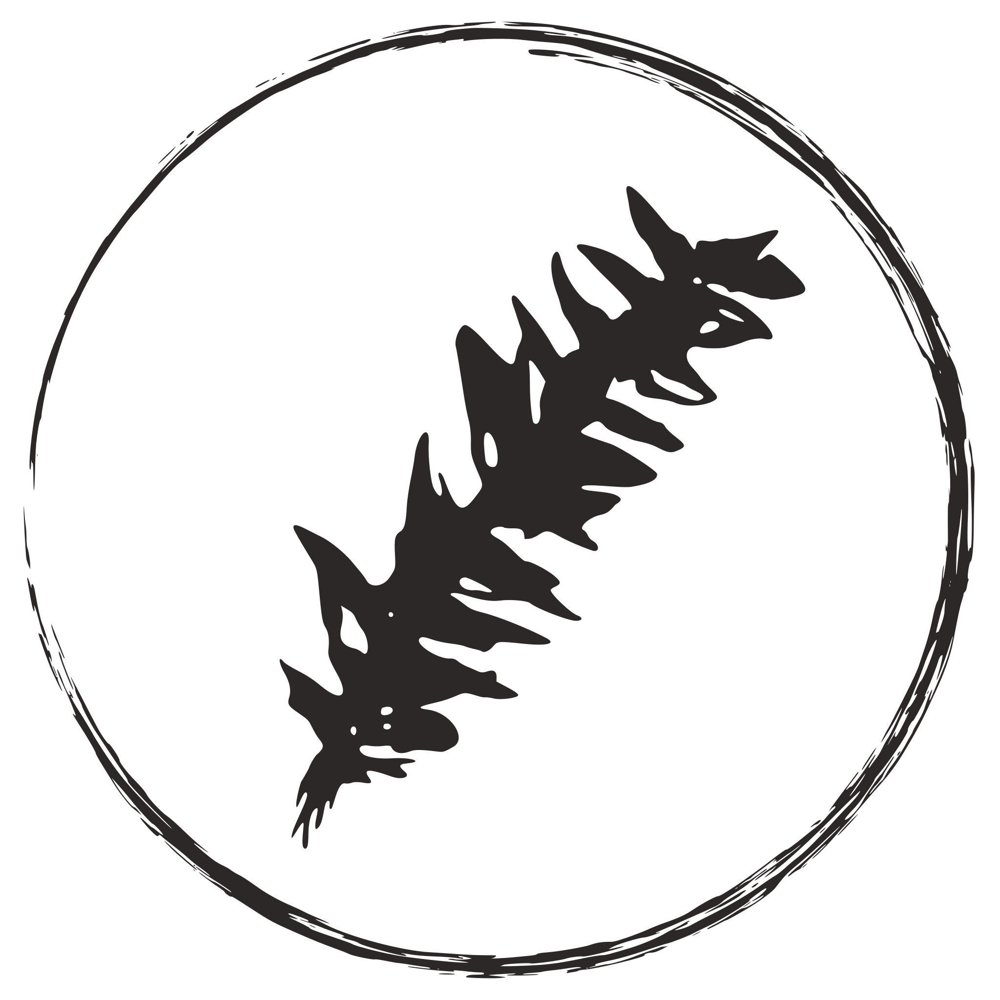
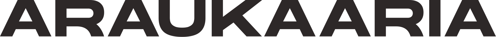
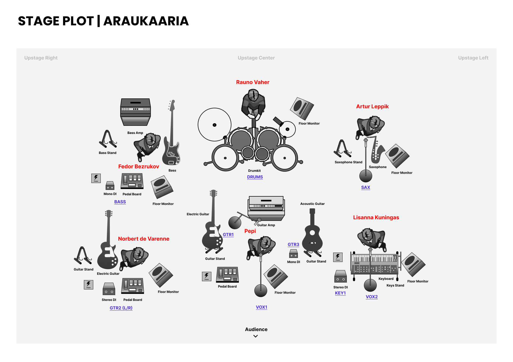

For bookers, promoters and press: bios, facts, quotes, photos, logos and the technical rider. Anything else, write to .
Araukaaria is an Argentine-Estonian psychedelic art rock band from Viljandi, led by Buenos Aires-born songwriter José “Pepi” Prieto. Sung in Spanish and English, their songs move from quiet, close arrangements to long electric builds, rooted in Argentine rock nacional with a touch of folk. Their self-titled debut album arrives on 2 April 2027.
Araukaaria brings Latin American psychedelia to the Baltic. The six-piece from Viljandi, Estonia, is led by José “Pepi” Prieto, a Buenos Aires-born songwriter who moved to Estonia in 2012 and has led the band for half a decade. Sung in Spanish and English, the music moves from quiet, close arrangements to long electric builds, rooted in Argentine rock nacional, from Charly García to Mi Amigo Invencible, with a touch of folk.
The band takes its name from the araucaria, an ancient South American tree sacred to the Mapuche people. Its logo began as an araucaria branch from Pepi’s family’s countryside house near Buenos Aires, cast in silver by Maarja Palu.
Araukaaria has played Tallinn Music Week, Jazzkaar, Sofar Sounds, Tartu Punch and Uus Laine, among other stages across Estonia. The single “Canto Oscuro”, with charango and backing vocals by Chilean songwriter Tomás del Real, is, in the words of north!, “disarmingly sincere”, with “a cinematic quality to it”.
The self-titled debut album, Araukaaria, arrives on 2 April 2027, with a release show in Viljandi.
Free to use for press and promotion of Araukaaria. Please credit the photographer.






contact@araukaaria.com · araukaaria.ee

| Ch. | Instrument | Mic / DI | Stand | Effects | Plot |
|---|